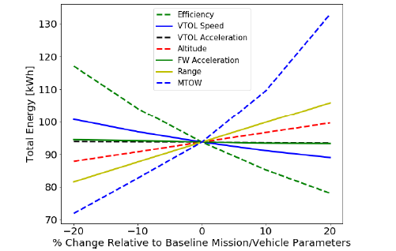

UAM Hybrid Power System: Capstone Project
The document included here is a 3-page excerpt with a summary of the document. All of the material, designs, and information detailing the UAM design are property of SMSD and will not be disclosed. Due to the agreement signed between the group and the client, and in good faith, the contents be generalized in any discussions. All the images included are courtesy of SMSD Lab group.
A capstone is an independent research project that gave me and four others a chance to demonstrate skills and knowledge of engineering while working on a real-world engineering task contracted out by a client. It is a one-semester-long project, broken down into literature and concept review, proposal, and a final submission, as well as any other relevant material for the client. The work that my team and I did for SMSD was acknowledged by the Mechanical and Materials faculty and my team and I were presented the George Christie Design Award for my performance in the area of design and product modification. My experience of the fourth-year design project was quite challenging and pushed me well beyond the bounds of my comfort zone, yet also very fulfilling and rewarding, and I am delighted that this work was recognized by the Department.
I was fortunate to be accepted to my first choice of a project a “UAM Hybrid Power System” for Structural and Multidisciplinary System Design Lab, SMSD Lab for short. Urban Air Mobility is a brand-new type of aviation transportation for operation and transport of cargo and passengers at low altitudes in urban and suburban environments. The objective of the capstone was to specify components and specify a system for an existing UAM vehicle designed by SMSD. SMSD provided the capstone group with characteristics of the existing design and objectives and requirements for the final power system design. The final submission to the client involved a detailed system plan, bill of materials containing all the required major components for the system, the location, and analysis of the center of gravity and aerodynamical center of the design provided by SMSD with the designed power system in place and a mathematical model with a flight simulation of the designed power system.
Pictured at the top of the page are some of the results of the simulation. The figure on the left describes the relationship between the DOH and power system mass with the turbogenerator off for part of the flight or on for the entirety of the flight. The dotted green line is the target weight of the power system and the points on the plot represent the 3 different proposed designs with ascending DOH and descending turbogenerator size. This figure shows the challenge in developing the power system for an aircraft, whereas the DOH rises, so does the weight of the power system. The figure on the right shows the energy efficiency vs the DOH, which as expected rises with a higher percentage of electrical power. The energy efficiency is defined as the ratio of the power at the propeller to the power provided by the batteries and turbogenerator. The figures highlight the optimization that is yet to be done with the system. By optimizing the time that the turbogenerator is off, each proposed option is expected to be in between the blue and the red lines.
The figure above shows the sensitivity analysis that was done in the simulation. The magnitude of the slope indicates the sensitivity of the variable to change, while the direction of the slope indicates the direction of change. Unsurprisingly the energy consumption varies the most with change in the maximum takeoff weight (MTOW), hence why the weight is critical in aviation. The efficiency is the most sensitive in the other direction, which means that increasing the efficiency decreases the power consumption. This figure highlights the importance of minimizing weight while increasing the efficiency of the power system and was the basis of mission planning. Not pictured in the figure, the most sensitive characteristic was the horizontal velocity of the vehicle: the aerodynamic advantage gained by a decrease in velocity is offset by the power lost to running the VTOL motors for a longer time.
My primary contributions to the project and material in the final submission were focused on the propulsion system consisting of electrical motors and propellers, aerodynamical analysis of the given design using VSP Aero, power strategy and system proposal/analysis which were then used for the creation of the simulation. The final was a 38-page report, with a problem introduction and breakdown, aerodynamical analysis, component selection, simulation, and final proposed design, which consisted of a primary and two supplementary system configurations. The final design was a turbogenerator system with 18% of the power supplied by a battery pack and propelled via 8 axial flux motors. This system would allow for an excess of 150 km range and downtime of 14-41 minutes, depending on the power strategy used. It uses 41.5 kg of kerosene for this kind of flight. The only objective that the project did not achieve was the 50% degree of hybridization, where current technology and limited research into the logistics, it could not be recommended to the client.
Besides the proposed designs, there were several key findings as a result of the design process. The degree of hybridization was found to impact the carbon footprint of design directly and significantly, as much as 41 times more per kWh fuel than per kWh supplied by the Ontario power grid. This could be further decreased with excess turbogenerator power used to charge the batteries in-flight. Additionally, with the current technology and infrastructure, fossil fuel-powered aircraft are still the recommended mode of transportation when compared to UAM vehicles. At the time of writing of this report, in November 2021, the weight and capacity limitations of battery technology are the main hindrance to a 50% hybrid UAM vehicle. However, with the growing awareness and demand for eco-friendly transport alternatives and rapidly evolving technology, the dawn of UAM transportation could be around the corner.
A special thanks to Connor Moffat (M.A.Sc Student) and Owen Pintar (M.A.Sc Student) whom my team and I had a pleasure of working alongside during the three-month-long project, and to Professor Kim (PhD), for his supervision of my team and of SMSD Lab Group.